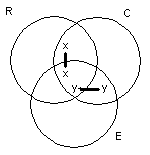
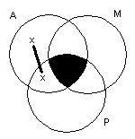
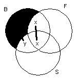
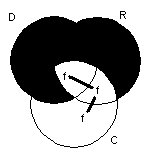
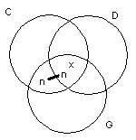
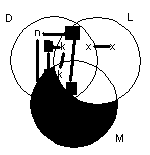
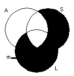
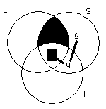

|
1. Some Russians are communists and some communists speak
English. Do some Russians speak English? Can't tell. |
 |
|
2. Not all Arabs are Muslims. Arab Muslims do not eat pork. Do
some Arabs eat pork? Can't tell. |
 |
|
3. Some birds fly and some don't. Birds that don't fly have small
wings. Do all birds have small wings? Can't tell. |
 |
|
4. Doctors are rich and rich people are conservative. Fred is
conservative. Is Fred a doctor? Can't tell. |
 |
|
5. Some conservative democrats are from Georgia. Sam Nunn is a
conservative from Georgia. Is Sam Nunn a democrat? Can't tell. |
 |
|
6. Nunn and Kennedy are both democrats, but only Kennedy is a
liberal. Only liberals support socialized medicine, and even
some liberals don't support it. Does Nunn support socialized
medicine? No. |
 |
|
7. None but the ambitious succeed. Mary is not ambitious. All
logic students succeed. Is Mary is a logic student? No. |
 |
|
8. All logic students are intelligent. George is a student, but he
does not study logic. Is George intelligent? Can't tell. |
 |
| Go to : | venn diagraming | next exercises | class materials |
| Send comments to | Dr. Nute |
dnute@ai.uga.edu |
the AI Center |
| produced for the | Philosophy | department | at UGA. |